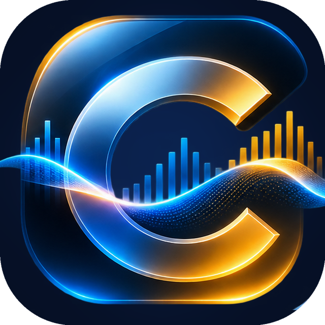
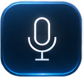
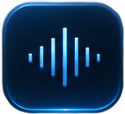
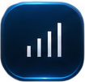
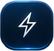
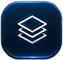
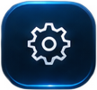
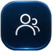

Podržte fn, mluvte a pusťte. Text se sám vloží do e-mailu, WhatsAppu, Wordu nebo prohlížeče – přesně tam, kde máte kurzor.
Stáhnout pro Mac
Žádné přepínání oken, žádné kopírování. Funguje v každé aplikaci.

Podržte fnkdekoliv, kde píšete
Mluvtenormálně, českyPostaveno pro češtinu. Běží přímo ve vašem Macu.

Model NVIDIA Canary rozumí češtině výrazně lépe než běžné diktování.
Hlas se nikam neposílá. Funguje i úplně bez internetu.

Rychlé i na MacBooku Air. Interpunkci a velká písmena píše samo.

Diktujte do poznámek nebo nahrajte celou schůzku – dostanete její přepis.

Jména, firmy a pojmy napíše přesně tak, jak chcete.

Stáhnout si ho může každý kolega s Macem. Zdarma, bez účtu.
Zabere asi 2 minuty.
Nefunguje to? Ukončete aplikaci (ikona nahoře v liště) a spusťte ji znovu. Nebo napište na info@clarix.cz.